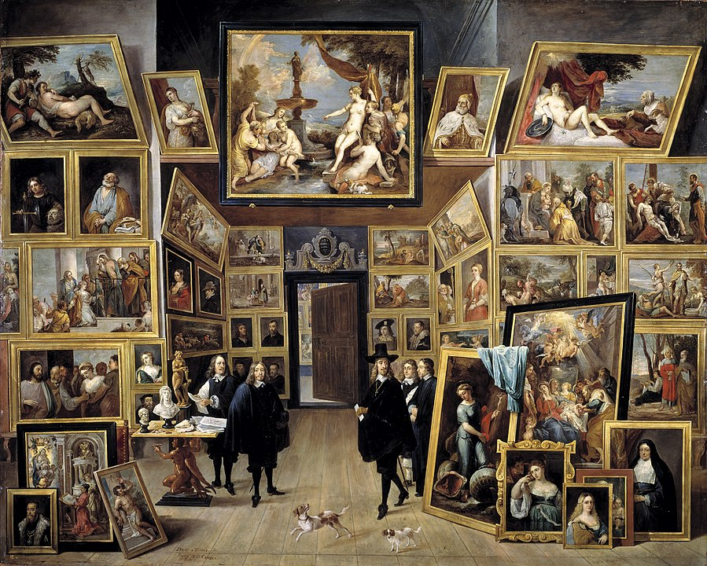

Episode 3
Summary
An episode that explores the value of paintings. It focuses on European oil paintings that often depict the wealth and prized properties of the owner.
Thoughts
I have never considered illustrations as a display of private possessions, most likely because the tradition and culture has changed. It is still interesting to see that in the past, it was the case for most of the paintings created. The value of paintings is essentially the combination of materials used, time alloted to create it, and the time spent to develop the skill of creating the painting. It feels as if time, by itself, has become a factor too. Older paintings have more historical value than the more recent ones. This is the case for most objects that have survived for a long period of time. Paintings especially have value because of their uniqueness. The older forms of computer, for example, would have less value most likely because there were many of them. The value of objects are all subjective though. If someone feels attracted to a certain painting, they would pay more, increasing the value of the painting. It is interesting how paintings created as a display of wealth turned into a possession to express wealth as time progressed. I’m sure it is mostly because oil painting was a luxury in the past, but it feels like now, painting is usually a hobby. In a sense, it still holds the meaning of expressing someone, whether it be wealth or passion. The topic reminds me of people uploading photos on social media like Instagram. The photos are expressive of what the “owners” like or possess, similar to the oil paintings Berger discussed.